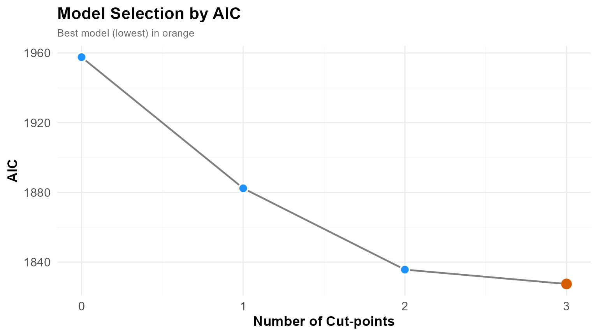
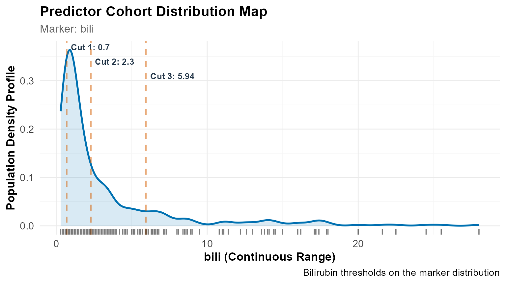
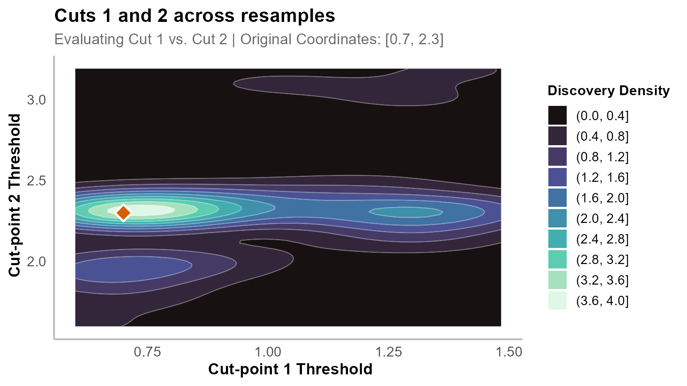
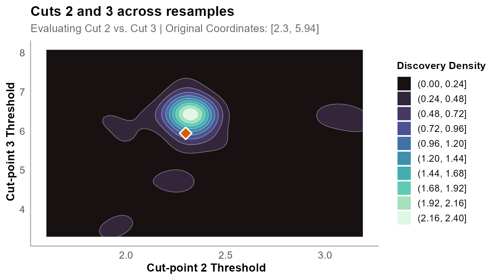

Analysing Clinical Survival Data with OptSurvCutR
Discovering biomarker thresholds and tier systems in liver disease
Payton Yau
Suhirthakumar Puvanendran
2026-09-08
Source:vignettes/bilirubin.Rmd
bilirubin.RmdIntroduction
Continuous biomarkers are routinely split into risk groups using a median or a threshold borrowed from another study. Both are arbitrary, and a single split cannot represent a relationship where risk rises in stages.
OptSurvCutR selects thresholds by optimising a survival
criterion, and then assesses how far those thresholds move under
resampling.
| Function | Question | Output |
|---|---|---|
find_cutpoint_number() |
How many groups? | A number, k |
find_cutpoint() |
Where are the boundaries? | k thresholds |
validate_cutpoint() |
How much do they move? | Intervals + stability tier |
How this differs from a single optimal cut-point
Established tools solve part of this problem well.
maxstat computes a maximally selected rank statistic with a
corrected p-value, which addresses the inflation that comes
from testing many candidate thresholds;
survminer::surv_cutpoint() wraps it in a convenient
interface. If a single unadjusted threshold is what the question needs,
they are a sound choice.
OptSurvCutR covers three things they do not:
maxstat / survminer
|
OptSurvCutR |
|
|---|---|---|
| Number of cut-points | One | Chosen from the data, one or more |
| Covariate adjustment | No | Yes, inside the search |
| Threshold stability | Not assessed | Bootstrap intervals and a tier |
The third is the one that changes conclusions. A corrected p-value tells you a threshold is unlikely to have arisen by chance; it says nothing about whether the same threshold would be found again in a comparable sample. Those are different questions, and in this vignette they give different answers: the four-group model is significant by any test, yet its boundaries are not reproducible.
The data
The Mayo Clinic trial of D-penicillamine in primary biliary cholangitis (Dickson et al., 1989) followed 418 patients with this chronic autoimmune liver disease, in which progressive destruction of the bile ducts leads to cholestasis, cirrhosis and eventually liver failure.
Serum bilirubin is the classic marker of that progression: as bile drainage fails, bilirubin accumulates. It is the strongest single component of the Mayo risk score, and clinicians have long used thresholds of it to time referral for transplantation. Values above roughly 1.2 mg/dL are considered abnormal.
Here we ask what threshold the data themselves support, adjusting for age, sex and the presence of edema.
1. Data preparation
data(pbc, package = "survival")
pbc_clean <- na.omit(pbc[, c("time", "status", "bili", "age", "sex", "edema")])
# Endpoint: transplant-free survival
# status: 0 = censored, 1 = transplant, 2 = death
pbc_clean$event <- as.integer(pbc_clean$status %in% c(1, 2))
nrow(pbc_clean)
+ [1] 418All six variables are complete across pbc, so the
analysis retains all 418 patients. The figure of 312 often quoted for
this dataset refers to records with complete trt and
laboratory values, which this model does not use.
Transplant is treated as an event rather than a censoring. Transplants are allocated preferentially to the sickest patients, so censoring them would remove the highest-risk patients from the high-bilirubin groups just as they were about to fail.
Adjusting for age, sex and
edema means thresholds are selected inside a Cox model
containing those variables, so a threshold cannot appear useful merely
by tracking one of them.
2. How many cut-points?
find_cutpoint_number() compares models of increasing
complexity using an information criterion. AIC penalises complexity
lightly and suits exploratory work; BIC is stricter and is the better
choice when a threshold is intended for clinical use. AICc corrects AIC
for small samples
().
num_res <- find_cutpoint_number(
data = pbc_clean, predictor = "bili",
outcome_time = "time", outcome_event = "event",
covariates = c("age", "sex", "edema"),
method = "genetic", criterion = "AIC",
max_cuts = 5,
nmin = 0.15, # each group holds at least 15% of patients
max.generations = NULL, pop.size = NULL,
boundary.enforcement = 2, seed = 123
)
+ ℹ nmin 0.15 is a proportion. Min. group size set to 62.
+ ℹ Finding optimal cut number: method = genetic
+ Running discrete genetic algorithm for 1 cut-point(s)...
+ Running discrete genetic algorithm for 2 cut-point(s)...
+ Running discrete genetic algorithm for 3 cut-point(s)...
+ Running discrete genetic algorithm for 4 cut-point(s)...
+ ! Model with 4 cut-point(s) collapsed: Subgroups violated the minimum 'nmin' constraint of 62 subjects.
+
+ Running discrete genetic algorithm for 5 cut-point(s)...
+ ! Model with 5 cut-point(s) collapsed: Subgroups violated the minimum 'nmin' constraint of 62 subjects.
summary(num_res)
+
+ ── Optimal Cut-point Number Analysis (Genetic) ─────────────────────────────────
+ ✔ Best Model: 3 Cut-points (Criterion: AIC)
+ ℹ Optimal Thresholds: "0.9, 1.4, 3.5"
+
+ ── 1. Model Comparison ──
+ Marker num_cuts AIC Delta_AIC AIC_Weight Evidence
+ 0 1957.60 130.11 0% Minimal
+ 1 1882.37 54.88 0% Minimal
+ 2 1835.71 8.22 1.6% Minimal
+ > 3 1827.49 0.00 98.4% Substantial
+ ── 2. Clinical Risk Cohorts ──
+ Group N Events Median_CI
+ G1 142 23 NA (NA - NA)
+ G2 76 26 3561 (3086 - NA)
+ G3 102 59 2286 (1725 - 3222)
+ G4 98 78 980 (859 - 1235)
+ ── 3. Cox Proportional-Hazards ──
+ Group HR Lower Upper P_Value Signif
+ groupG2 2.169 1.236 3.809 0.007 **
+ groupG3 4.934 3.020 8.062 0.000 ***
+ groupG4 12.178 7.503 19.766 0.000 ***
+ age 1.025 1.011 1.039 0.001 ***
+ sexf 0.940 0.612 1.444 0.778
+ edema 4.965 3.099 7.955 0.000 ***
+ ℹ Overall Model: Concordance = 0.802 | Log-rank p = 0
+
+ ── 4. Time-Dependent Diagnostics (Schoenfeld) ──
+
+ ✔ Passed: The proportional hazards assumption holds across the follow-up period (Global p = 0.29).
+
+ ── 5. Analysis Parameters ──
+
+ * Search Method: Genetic
+ * Predictor: bili
+ * Criterion: AIC
+ * Maximum Cuts: 5
+ * Minimum Group Size (nmin): 62
+ * Covariates: age, sex, edema
plot(num_res)
AIC is minimised at three cut-points, carrying 98.4% of the AIC weight against 1.6% for the two-cut model.
The four- and five-cut models return no valid solution: with
nmin = 0.15 each group needs 62 patients, and the genetic
search found no partition that satisfied this. A search returning
nothing does not prove that nothing exists — raising
max.generations and pop.size, or lowering
nmin, may find one.
3. Where are the boundaries?
cut_res <- find_cutpoint(
data = pbc_clean, predictor = "bili",
outcome_time = "time", outcome_event = "event",
covariates = c("age", "sex", "edema"),
method = "genetic", criterion = "logrank",
num_cuts = num_res$optimal_num_cuts, # carried from step 1
nmin = 0.15,
n_perm = 20, # low for build speed; use >= 1000 when reporting
max.generations = NULL, pop.size = NULL,
boundary.enforcement = 2, seed = 123, n_cores = 1
)
+ ℹ nmin 0.15 is a proportion. Min. group size set to 62.
+ ℹ Starting regularised genetic search for 3 cut(s)...
+ ℹ Running 20 permutations to calculate adjusted p-value...
summary(cut_res)
+
+ ── Optimal Cut-point Analysis for Survival Data (Genetic) ──────────────────────
+ ✔ Optimal Threshold(s): "0.7, 2.3, 5.945"
+ ℹ Permutation-Adjusted P-value (20 runs): 0.0476
+
+ ── 1. Stratified Risk Cohorts ──
+
+ Group N Events Median_Time OS Rate at T=4795
+ G1 100 12 NR (Not Reached) 80.8% (70.8-92.1)
+ G2 175 62 3445 33.3% (22.4-49.3)
+ G3 80 60 1504 0% (NA-NA)
+ G4 63 52 930 3.9% (0.6-24.4)
+ ── 2. Cox Proportional-Hazards ──
+ Group HR Lower Upper P_Value Signif
+ G2 3.267 1.759 6.066 0.000 ***
+ G3 12.197 6.502 22.881 0.000 ***
+ G4 20.929 10.853 40.359 0.000 ***
+ age 1.027 1.012 1.041 0.000 ***
+ sexf 0.938 0.613 1.435 0.769
+ edema 4.048 2.542 6.446 0.000 ***
+ ℹ Overall Model: Concordance = 0.811 | Log-rank p = 0
+
+ ── 3. Time-Dependent Diagnostics (Schoenfeld) ──
+
+ ✔ Passed: The proportional hazards assumption holds across the follow-up period (Global p = 0.103).
+
+ ── 4. Analysis Parameters ──
+
+ • Search Method: Genetic
+ • Predictor: bili
+ • Number of cuts: 3
+ • Minimum group size (nmin): 62
+ • Covariates: age, sex, edema
+ • Permutations: 20num_cuts is taken from the Step 1 object rather than
specified directly. Selecting the number of groups after inspecting the
survival curves would reintroduce the selection problem that Step 1 is
intended to control.
The thresholds are 0.7, 2.3 and 5.945 mg/dL, giving groups of 100, 175, 80 and 63 patients. Hazard ratios rise across them (3.27, 12.20, 20.93 relative to the lowest group) and median transplant-free survival falls from not reached to 3445, 1504 and 930 days. Concordance is 0.811.
The reported permutation p of 0.0476 is exactly 1/(20+1),
the smallest value n_perm = 20 can return. It means no
permutation exceeded the observed statistic, not that p equals
0.0476.
The Schoenfeld test gives p = 0.103, so there is no evidence against proportional hazards and the hazard ratios can be read as approximately constant over follow-up.
plot(cut_res, type = "distribution") +
geom_rug(alpha = 0.5) +
labs(caption = "Bilirubin thresholds on the marker distribution")
4. Are the boundaries stable?
validate_cutpoint() re-runs the search on resampled
cohorts and records where each boundary lands.
val_res <- validate_cutpoint(
cutpoint_result = cut_res,
num_replicates = 30, # reduced for build speed; use >= 500 when reporting
n_cores = 1, # single core: vignette builds cannot use parallel workers
max.generations = NULL, pop.size = NULL,
boundary.enforcement = 2, seed = 123
)
+ ℹ Using random seed 123 for reproducibility.
+ ℹ Bootstrap `nmin` not set. Using 55 (90% of original) to improve stability.
+ ℹ Validating 3 cut(s) from 'genetic' search using 'logrank' over regularised coordinate lattice.
+ ℹ Running 30 replicates sequentially (n_cores = 1).
+ Bootstrapping ■■■■ 10% | ETA: 11sBootstrapping ■■■■■ 13% | ETA: 12sBootstrapping ■■■■■■ 17% | ETA: 13sBootstrapping ■■■■■■■ 20% | ETA: 13sBootstrapping ■■■■■■■■ 23% | ETA: 12sBootstrapping ■■■■■■■■■ 27% | ETA: 12sBootstrapping ■■■■■■■■■■ 30% | ETA: 12sBootstrapping ■■■■■■■■■■■ 33% | ETA: 11sBootstrapping ■■■■■■■■■■■■ 37% | ETA: 11sBootstrapping ■■■■■■■■■■■■■ 40% | ETA: 10sBootstrapping ■■■■■■■■■■■■■■ 43% | ETA: 10sBootstrapping ■■■■■■■■■■■■■■■ 47% | ETA: 9sBootstrapping ■■■■■■■■■■■■■■■■ 50% | ETA: 9sBootstrapping ■■■■■■■■■■■■■■■■■ 53% | ETA: 8sBootstrapping ■■■■■■■■■■■■■■■■■■ 57% | ETA: 7sBootstrapping ■■■■■■■■■■■■■■■■■■■ 60% | ETA: 7sBootstrapping ■■■■■■■■■■■■■■■■■■■■ 63% | ETA: 6sBootstrapping ■■■■■■■■■■■■■■■■■■■■■ 67% | ETA: 6sBootstrapping ■■■■■■■■■■■■■■■■■■■■■■ 70% | ETA: 5sBootstrapping ■■■■■■■■■■■■■■■■■■■■■■■ 73% | ETA: 5sBootstrapping ■■■■■■■■■■■■■■■■■■■■■■■■ 77% | ETA: 4sBootstrapping ■■■■■■■■■■■■■■■■■■■■■■■■■ 80% | ETA: 3sBootstrapping ■■■■■■■■■■■■■■■■■■■■■■■■■■ 83% | ETA: 3sBootstrapping ■■■■■■■■■■■■■■■■■■■■■■■■■■■ 87% | ETA: 2sBootstrapping ■■■■■■■■■■■■■■■■■■■■■■■■■■■■ 90% | ETA: 2sBootstrapping ■■■■■■■■■■■■■■■■■■■■■■■■■■■■■ 93% | ETA: 1sBootstrapping ■■■■■■■■■■■■■■■■■■■■■■■■■■■■■■ 97% | ETA: 1s ✔ 30 replicates completed.
summary(val_res)
+ Cut-point Stability Analysis (Bootstrap)
+ ----------------------------------------
+ Original Optimal Cut-point(s): 0.7, 2.3, 5.945
+
+ Bootstrap Distribution Summary
+ -----------------------------
+ Cut Mean SD Median Q1 Q3
+ 25% Cut1 0.947 0.290 0.830 0.700 1.275
+ 25%1 Cut2 2.290 0.341 2.300 2.142 2.339
+ 25%2 Cut3 5.892 1.094 6.353 5.700 6.447
+
+ 95% Confidence Intervals
+ ------------------------
+ Lower Upper
+ Cut 1 0.600 1.423
+ Cut 2 1.723 3.125
+ Cut 3 3.372 7.426
+
+ Validation Parameters
+ ---------------------
+ Replicates Requested: 30
+ Successful Replicates: 30 / 30 ( 100 %)
+ Failed Replicates: 0
+ Cores Used: 1
+ Seed: 123
+ Minimum Group Size (nmin): 55
+ Method: genetic
+ Criterion: logrank
+ Covariates: age, sex, edema
+
+
+ Stability Assessment:
+ ---------------------
+ Maximum CI Width (Relative to 10th-90th Percentile Range): 54.6%
+ ✔ Model Status: DISTINCT (Tier 2)
+ The relative mathematical variance is moderate (54.6%), but 95% Confidence
+ Intervals do not overlap.The bootstrap nmin is relaxed to 55 automatically.
Resampled cohorts contain duplicates and fewer distinct values, so
holding the original constraint would cause replicates to fail.
Reading the tier
Two quantities are assessed: whether adjacent intervals overlap, and each interval’s width relative to the predictor’s 10th–90th percentile range.
| Tier | Overlap | Width | Meaning |
|---|---|---|---|
| 1 — OPTIMAL | None | < 30% | Precise boundaries, distinct groups |
| 2 — DISTINCT | None | Any | Groups distinct, boundaries move |
| 3 — CAUTION | Present | 30–60% | Adjacent groups not cleanly separated |
| 4 — UNSTABLE | Present | > 60% | Boundaries not reproducible |
These are two independent diagnostics rather than an ordinal scale: overlap matters most for a multi-tier rule, width for a single reported boundary. The percentages are practical conventions.
The number of replicates affects the width of the intervals. With few replicates the 2.5th and 97.5th percentiles fall close to the extremes of the resampled values, and the intervals are narrower than they should be. Use at least 500 replicates for any reported analysis. The chunk above uses 30 to keep the vignette build short; the section below reports the 500-replicate results.
5. Results at 500 replicates
Running the same validation with num_replicates = 500
gives:
| Model | Thresholds | Widest interval | Tier |
|---|---|---|---|
| Three cut-points | 0.7, 2.3, 5.945 | 54.2% | 3 — CAUTION |
| Two cut-points | 2.3, 5.945 | 59.9% | 3 — CAUTION |
| One cut-point | 2.3 | 18.8% | 1 — OPTIMAL |
For the three-cut model the intervals are 0.6–1.6, 1.4–3.3 and 3.0–7.03 mg/dL. Both adjacent pairs intersect, so a patient with a bilirubin of 1.5 mg/dL is assigned to a different group depending on the resample. The component widths are uneven: the two lower boundaries are well resolved at 13.5% and 25.6%, both within Tier 1 bounds on width alone, whereas the upper boundary, situated in the sparse right tail, is not reproducible at 54.2%.
The two-cut model performs less well, with a widest interval of 59.9% and the lowest boundary widening from 0.6–1.6 to 0.7–3.0 mg/dL. With three groups the minimum stratum constraint admits a wider feasible region, so the optimum varies more across resamples. Reducing the number of cut-points does not necessarily improve stability, and is worth testing rather than assuming.
The threshold is 2.3 mg/dL with a bootstrap interval of 2.0–3.4. The median across 500 resamples is 2.3, identical to the value found in the full data, and the interquartile range is 2.3–3.0. This is also the middle boundary of the three-cut model: the search returned to the same point regardless of how many groups it was asked for.
The reduction from three cut-points to one followed the stability
assessment and constitutes a post-hoc simplification, which should be
reported as such. Two considerations support it: the sequence is
prescribed by the workflow in advance rather than selected for this
dataset, and validate_cutpoint() issues the recommendation
as part of its diagnostic output. The adjusted hazard ratio for the
single-threshold model nonetheless remains optimistic, since the
threshold was selected from the same data used to estimate it.
6. Reporting
Group composition
final_dataset <- plot(cut_res, return_data = TRUE)
final_dataset %>%
group_by(group) %>%
summarise(
Bilirubin = paste0(round(min(factor), 2), " – ", round(max(factor), 2)),
N = n(),
Events = sum(event),
Mean_Age = round(mean(age), 1),
Edema = round(mean(edema), 2)
) %>%
kable(caption = "Composition of the four-group model")| group | Bilirubin | N | Events | Mean_Age | Edema |
|---|---|---|---|---|---|
| 1 | 0.3 – 0.7 | 100 | 12 | 51.0 | 0.04 |
| 2 | 0.8 – 2.3 | 175 | 62 | 51.0 | 0.07 |
| 3 | 2.4 – 5.9 | 80 | 60 | 49.4 | 0.09 |
| 4 | 6 – 28 | 63 | 52 | 51.4 | 0.28 |
Mean age is flat across groups, so the survival gradient is not age
in disguise. Edema is seven times more common in the highest group than
the lowest and is strongly associated with the outcome, which is why it
is included as an adjustment variable. The highest group contains 63
patients against a floor of 62, so its lower boundary is determined
partly by the nmin constraint rather than by the data
alone.
Hazard ratios and diagnostics
plot(cut_res, type = "forest",
main = "Adjusted hazard ratios relative to group 1")
These estimates come from the data that selected the thresholds and are therefore optimistic.

plot(cut_res, type = "outcome",
title = "Transplant-free survival by bilirubin group",
xlab = "Follow-up (days)", ylab = "Transplant-free survival",
legend.title = "Bilirubin group")
Joint stability
An interval shows how one threshold moves; it cannot show whether two move together.
plot_validation(val_res, focus_cuts = c(1, 2),
main = "Cuts 1 and 2 across resamples")
plot_validation(val_res, focus_cuts = c(2, 3),
main = "Cuts 2 and 3 across resamples")
A tight cloud indicates both boundaries are well determined. Elongation along one axis identifies the imprecise boundary. A diagonal spread means the two are trading off, with several partitions scoring similarly.7. Conclusion
AIC selected four bilirubin groups with 98.4% of the model weight, monotonic hazard ratios and concordance of 0.81. The bootstrap showed that the boundaries overlapped and would not survive a different sample of the same size. A single threshold at 2.3 mg/dL — close to twice the upper limit of normal — proved highly reproducible.
Significance and stability are different properties. A tool reporting only thresholds and a p-value would have returned four groups here, and every check it ran would have supported them. The third step is one function call, and in this analysis it is the difference between reporting “0.7, 2.3 and 5.945 mg/dL” and reporting “2.3 mg/dL”.
When reporting an analysis of this kind: use BIC for confirmatory
work, n_perm of at least 1000, at least 500 bootstrap
replicates, and check the composition table for covariate imbalance.
Bootstrap stability describes sampling variability within one cohort; it
is not a prediction about an independent one.
Reference
Dickson ER, Grambsch PM, Fleming TR, Fisher LD, Langworthy A (1989). Prognosis in primary biliary cirrhosis: model for decision making. Hepatology 10:1–7.
sessionInfo()
+ R version 4.6.1 (2026-06-24 ucrt)
+ Platform: x86_64-w64-mingw32/x64
+ Running under: Windows 11 x64 (build 26200)
+
+ Matrix products: default
+ LAPACK version 3.12.1
+
+ locale:
+ [1] LC_COLLATE=English_United Kingdom.utf8
+ [2] LC_CTYPE=English_United Kingdom.utf8
+ [3] LC_MONETARY=English_United Kingdom.utf8
+ [4] LC_NUMERIC=C
+ [5] LC_TIME=English_United Kingdom.utf8
+
+ time zone: Europe/London
+ tzcode source: internal
+
+ attached base packages:
+ [1] stats graphics grDevices utils datasets methods base
+
+ other attached packages:
+ [1] OptSurvCutR_0.11.0 knitr_1.51 ggplot2_4.0.3 dplyr_1.2.1
+ [5] survival_3.8-9
+
+ loaded via a namespace (and not attached):
+ [1] gtable_0.3.6 xfun_0.60 bslib_0.12.0 htmlwidgets_1.6.4
+ [5] rstatix_1.1.0 lattice_0.22-9 vctrs_0.7.3 tools_4.6.1
+ [9] generics_0.1.4 parallel_4.6.1 tibble_3.3.1 pkgconfig_2.0.3
+ [13] Matrix_1.7-6 RColorBrewer_1.1-3 S7_0.2.2 desc_1.4.3
+ [17] lifecycle_1.0.5 compiler_4.6.1 farver_2.1.2 textshaping_1.0.5
+ [21] codetools_0.2-20 carData_3.0-6 htmltools_0.5.9 sass_0.4.10
+ [25] yaml_2.3.12 Formula_1.2-6 pillar_1.11.1 pkgdown_2.2.1
+ [29] car_3.1-5 ggpubr_1.0.0 jquerylib_0.1.4 tidyr_1.3.2
+ [33] MASS_7.3-66 cachem_1.1.0 survminer_0.5.2 iterators_1.0.14
+ [37] rgenoud_5.9-0.11 abind_1.4-8 foreach_1.5.2 nlme_3.1-170
+ [41] tidyselect_1.2.1 digest_0.6.39 purrr_1.2.2 labeling_0.4.3
+ [45] splines_4.6.1 fastmap_1.2.0 grid_4.6.1 cli_3.6.6
+ [49] magrittr_2.0.5 patchwork_1.3.2 broom_1.0.13 withr_3.0.3
+ [53] scales_1.4.0 backports_1.5.1 rmarkdown_2.31 otel_0.2.0
+ [57] gridExtra_2.3.1 ggsignif_0.6.4 ragg_1.5.2 evaluate_1.0.5
+ [61] doParallel_1.0.17 viridisLite_0.4.3 mgcv_1.9-4 rlang_1.3.0
+ [65] Rcpp_1.1.2 isoband_0.3.0 glue_1.8.1 rstudioapi_0.19.0
+ [69] jsonlite_2.0.0 R6_2.6.1 systemfonts_1.3.2 fs_2.1.0